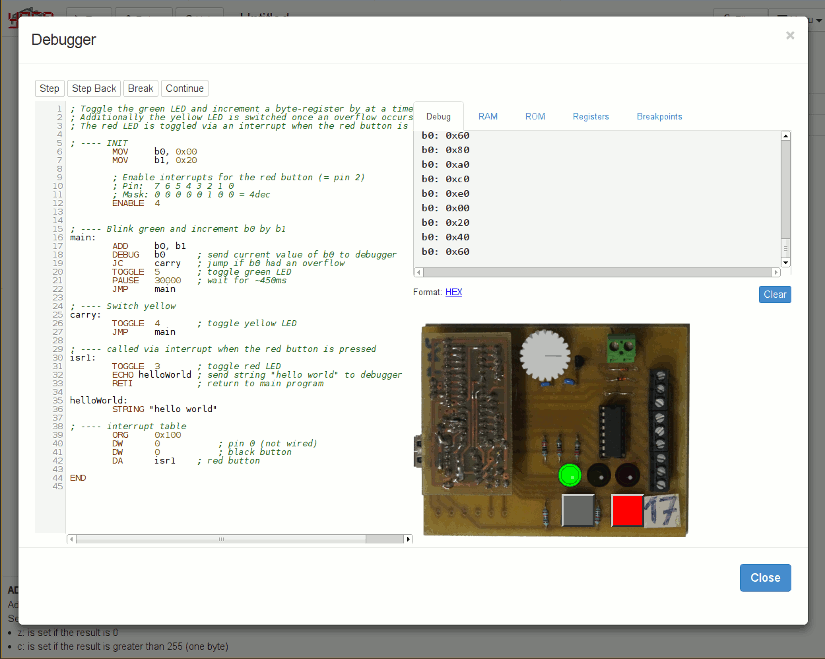

Project
yasp is a fully functional web-based assembler development environment, including a real assembler, emulator and debugger. The assembler dialect is custom and very simple so as to keep the learning curve as shallow as possible. It also features some hardware-elements (LED, Potentiometer, Button, etc.). The goal of this project is to create an environment in which students can learn the assembly language so that they understand computers better. Furthermore it allows them to experiment without the fear of breaking something. The original project team of yasp consists of Robert Fischer and Michael "luto" Lutonsky. For more information take a look at the about-section in the IDEs menu.
yasp started out as a school project and was then later, in early 2014, released into public as GPL.
Team
The original project team of yasp consists of Robert Fischer and Michael "luto" Lutonsky. For more information take a look at the about-section in the IDEs menu.
Features
yasp features 43 instructions (73 with all overloads), which can access its 32 byte and word registers and the connected hardware. The main features of the project are:
-
Editor
- syntax highlighting
- live error-checking
- interactive quickhelp
- Debugger with many features, such as breakpoints and step back
- Emulator
- 16-byte stack
- simple subroutines
- hardware-interrupts
- 32 byte registers, 32 word registers
- PWM-Simulation (soft blinking LEDs)
- 25 kHz in benchmarks on an i7-3630QM
- carry and zero flag
-
Hardwaresimulation
- LED
- Pushbutton
- potentiometer
-
43 instructions (73 including overloads)
- basics like MOV, ADD, XOR, RR, MUL, CLR, OR, ...
- program flow: JMP, JC, JNC, JZ, CALL, RET, ...
- make use of the stack with PUSH or POP
- interupt commands: ENABLE, DISABLE, RETI
- hardware interaction: HIGH, LOW, TOGGLE, ADC, ...
- talk to the debugger using DEBUG and ECHO
- Filemanager